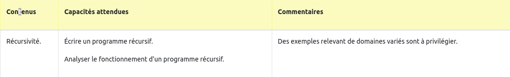
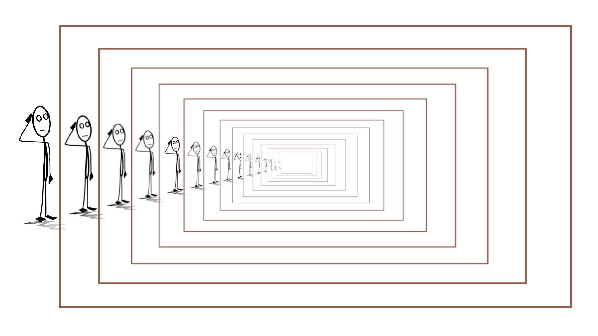
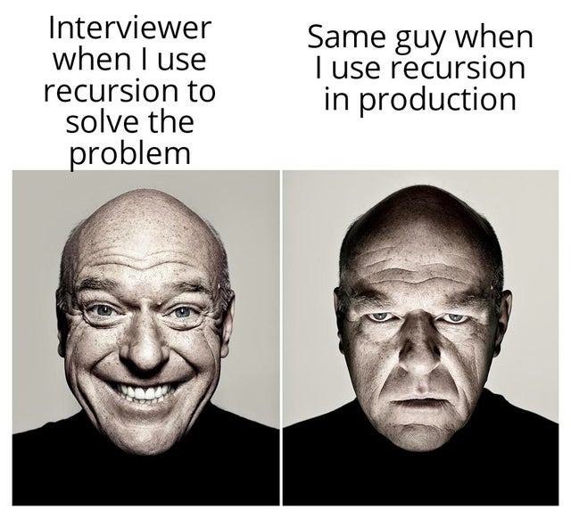
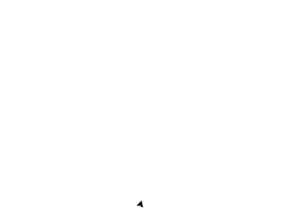

CH2 : La récursivité⚓︎
Programme officiel


1. Première approche⚓︎
1.1. Définition⚓︎
Fonction récursive 
Une fonction est dite récursive lorsqu'elle fait appel à elle-même dans sa propre définition.
1.2 Un très mauvais exemple⚓︎
C'est déjà une première chose à comprendre : un programme peut être appelé par lui-même, à l'intérieur de sa propre définition.
1 2 3 | |
Si on appelle cette fonction, par la commande :
>>> prems()
un très mauvais exemple
un très mauvais exemple
un très mauvais exemple
un très mauvais exemple
un très mauvais exemple
un très mauvais exemple
un très mauvais exemple
un très mauvais exemple
un très mauvais exemple
un très mauvais exemple
un très mauvais exemple
un très mauvais exemple
un très mauvais exemple
...
Évidemment, comme prévu, ce programme ne s'arrête pas. Nous sommes obligés de l'arrêter manuellement. Nous sommes (volontairement) tombés dans un piège qui sera systématiquement présent lors d'une programmation récursive : le piège de la boucle infinie.
1.3 La mauvaise réputation⚓︎
Dans la culture informatique, la récursivité est (trop) souvent abordée par le biais de l'auto-référence, le puits sans fin de la boucle infinie.
On trouve d'ailleurs fréquemment cette définition de la récursivité :
Fonction récursive : fonction qui fait appel à la récursivité. Voir fonction récursive.
Google fait aussi (dans toutes les langues) la même blague lors d'une recherche sur le terme «récursivité» :
Les acronymes récursifs sont aussi très fréquents... et véhiculent avec eux le même piège : une fonction récursive ne serait jamais vraiment définie (c'est faux, nous le verrons)
Par exemple :
- GNU (dans GNU/Linux) signifie GNU is Not Unix. On ne sait jamais vraiment ce que signifie GNU...
- PHP (le langage serveur) sigifie PHP: Hypertext Preprocessor
- VISA (les cartes bancaires) signifie VISA International Service Association.
2. La récursivité, ça marche !⚓︎
Disons-le clairement : au-delà de la blague pour initiés (dont vous faites partie maintenant) la récursivité ne DOIT PAS être associée à une auto-référence vertigineuse : c'est en algorithmique une méthode (parfois) très efficace, à condition de respecter une règle cruciale :  l'existence d'un CAS DE BASE .
l'existence d'un CAS DE BASE .
Ce «cas de base» sera aussi appelé «condition d'arrêt», puisque la très grande majorité des algorithmes récursifs peuvent être perçus comme des escaliers qu'on descend marche par marche, jusqu'au sol qui assure notre arrêt.
2.1 La récursivité en BD :⚓︎
Observez bien la descente puis la remontée de notre vendeur de livre. Le cas de base est ici l'étage 0. Il empêche une descente infinie.
Nous coderons bientôt la fonction donnant le prix du livre en fonction de l'étage.
Pour l'instant, découvrons enfin à quoi ressemble une fonction récursive «bien écrite» :
2.2 Enfin un bon exemple⚓︎
Exemple fondateur n°1
1 2 3 4 5 | |
Trois choses sont essentielles et doivent se retrouver dans tout programme récursif :
lignes 2 et 3: le cas de base (sinvaut 0 on renvoie vraiment une valeur, en l'occurence 0)ligne 5: l'appel récursifligne 5: la décrémentation du paramètre d'appel
Utilisation de la fonction mystere
>>> mystere(0)
0
>>> mystere(4)
10
Analyse grâce à PythonTutor
Que se passe-t-il lorsqu'on appelle mystere(4) ?
On voit que l'existence du cas de base pour \(n=0\) est primordiale pour éviter la récursion infinie.

Cette fonction mystere(n) calcule donc la somme des entiers positifs inférieurs ou égaux à \(n\).
Remarque historique
mystere(100) est égal à 5050.
Une anecdote raconte que Carl Friedrich Gauss trouva cette valeur de 5050 en quelques secondes, devant son instituteur ébahi.
Il venait pour cela d'inventer la formule :
\(1+2+3+\dots+n=\frac{n(n+1)}{2}\)
Ici, \(1+2+3+\dots+100=\frac{100\times 101)}{2}=50 \times 101=5050\)
Exercice
Coder la fonction prix(etage) de la BD présentée plus haut.
1 2 3 4 5 | |
Exercice
On considère la fonction factorielle(n) (notée \(n!\) en mathématiques), qui calcule le produit d'un entier \(n\) par les entiers positifs qui lui sont inférieurs:
$$ n! = n \times (n-1) \times (n-2) \times \dots \times 3 \times 2 \times 1$$
Exemple : \(5!=5\times4\times3\times2\times1=120\)
Par convention, \(1!=1\)
- Programmer de manière impérative (manière classique) la fonction factorielle. On l'appelera
fact_imp(). - Programmer de façon récursive la fonction factorielle. On l'appelera
fact_rec().
Quelle paradigme de programmation vous a semblé le plus naturel ?
1 2 3 4 5 6 7 8 9 10 11 | |
3. Le mécanisme interne de la récursivité⚓︎
3.1 Notion de pile⚓︎
Lors d'un appel à une fonction récursive, le processeur utilise une structure de pile pour stocker les contextes d'exécution de chaque appel. Dans la notion de pile, seule l'instruction «en haut de la pile» peut être traitée et enlevée (on dit «dépilée»).
La pile d'appels de notre fonction mystere(5) peut donc être schématisée comme ceci :
3.2 Limitation de la taille de la pile⚓︎
Nous venons de voir que notre appel à mystere(5) générait une pile de hauteur 6 (on parlera plutôt de profondeur 6). Cette profondeur est-elle limitée ?
mystere(2962)
---------------------------------------------------------------------------
RecursionError Traceback (most recent call last)
<ipython-input-32-a97c4dde4ef8> in <module>
----> 1 mystere(2962)
<ipython-input-1-386660a434f2> in mystere(n)
3 return 0
4 else :
----> 5 return n + mystere(n-1)
... last 1 frames repeated, from the frame below ...
<ipython-input-1-386660a434f2> in mystere(n)
3 return 0
4 else :
----> 5 return n + mystere(n-1)
RecursionError: maximum recursion depth exceeded in comparison
Vous venons de provoquer un «débordement de pile», le célèbre stack overflow.
De manière générale, les programmes récursifs sont souvent susceptibles de générer un trop grand nombre d'appels à eux-mêmes. Il est parfois possible de les optimiser, comme nous le verrons dans le cours concernant la programmation dynamique.
Nous reparlerons aussi de récursivité lorsque nous l'inscrirons dans un paradigme plus global de programmation, qui est « diviser pour régner » (en anglais divide and conquer).
4. Exemples de récursivité double⚓︎
4.1 La suite de Fibonnaci⚓︎
Considérons la suite numérique ainsi définie :
- \(F_0 = 0\)
- \(F_1 = 1\)
- \(\forall n \in \mathbb{N}, F_{n+2} = F_{n+1}+F_n\)
On a donc \(F_2=0+1=1, F_3=F_2+F_1=1+1=2, F_4=F_3+F_2=2+1=3, F_5=F_4+F_3=3+2=5\) ...
Exercice
Implémenter de façon récursive la suite de Fibonnaci.
1 2 3 4 5 6 7 | |
Observation de la pile d'exécution
Appelons F(n) la fonction calculant de manière récursive le n-ième terme de la suite. Observons en détail la pile d'exécution lors du calcul de F(4).
Analyse grâce à PythonTutor
On s'aperçoit notamment que :
- les appels récursifs ne sont PAS simultanés (rappelons que la simultanéité n'existe théoriquement pas en informatique). On pourrait s'imaginer que la relation \(F_4=F_3+F_2\) allait déclencher deux «fils» récursifs calculant respectivement \(F_3\) et \(F_2\). Il n'en est rien, on va jusqu'au bout du calcul de \(F_3\) avant de s'intéresser à \(F_2\).
- conséquence de la remarque précédente : le calcul de \(F_2\) s'effectue 2 fois. Une amélioration future (appelée mémoïsation, voir le cours de programmation dynamique) sera de conserver cette valeur de \(F_2\) afin d'améliorer les calculs.
On peut y construire par exemple l'arbre d'appel de fibo(6) :

On y remarque (par exemple) que fibo(2) est calculé 5 fois...
4.2 Comparaison des performances⚓︎
Exercice
Écrire une fonction fibo_imperatif(n) qui calcule de façon directe (impérative) le n-ième terme de la suite de Fibonnaci.
1 2 3 4 5 6 7 8 | |
Observons grâce au module timeit le temps moyen pris pour calculer \(F(20)\) avec les deux fonctions fibo_imperatif() et fibo_recursif().
%timeit fibo_imperatif(20)
1.02 µs ± 14 ns per loop (mean ± std. dev. of 7 runs, 1000000 loops each)
%timeit fibo_recursif(20)
2.35 ms ± 10.8 µs per loop (mean ± std. dev. of 7 runs, 100 loops each)
La programmation récursive apparait donc comme quasiment 1000 fois plus lente que l'impérative.
 Attention : cette comparaison des vitesses d'éxécution peut être critiquée car les deux programmes n'ont pas la même complexité. Nous étudierons la complexité au moment des algorithmes de tri.
Attention : cette comparaison des vitesses d'éxécution peut être critiquée car les deux programmes n'ont pas la même complexité. Nous étudierons la complexité au moment des algorithmes de tri.

Peut-on résumer la récursivité à une méthode élégante mais inefficace ? Ce serait réducteur : l'efficacité c'est aussi avoir un code lisible et intuitif. Nous en reparlerons lors du parcours des arbres et des graphes. (cf aussi l'exercice sur les Tours de Hanoï)
5. Annexe : dessins récursifs grâce au module turtle⚓︎
Le module turtle permet de faire des tracés basiques. Mais dès l'instant où on met de la récursivité dans le code, les résultats peuvent devenir très surprenants, et aboutir à des structures fractales.
1 2 3 4 5 6 7 8 9 10 11 12 13 14 15 16 17 18 19 20 21 22 23 24 25 | |
